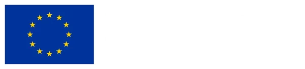
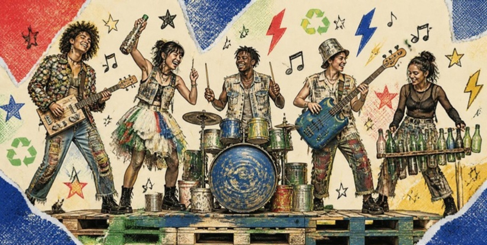
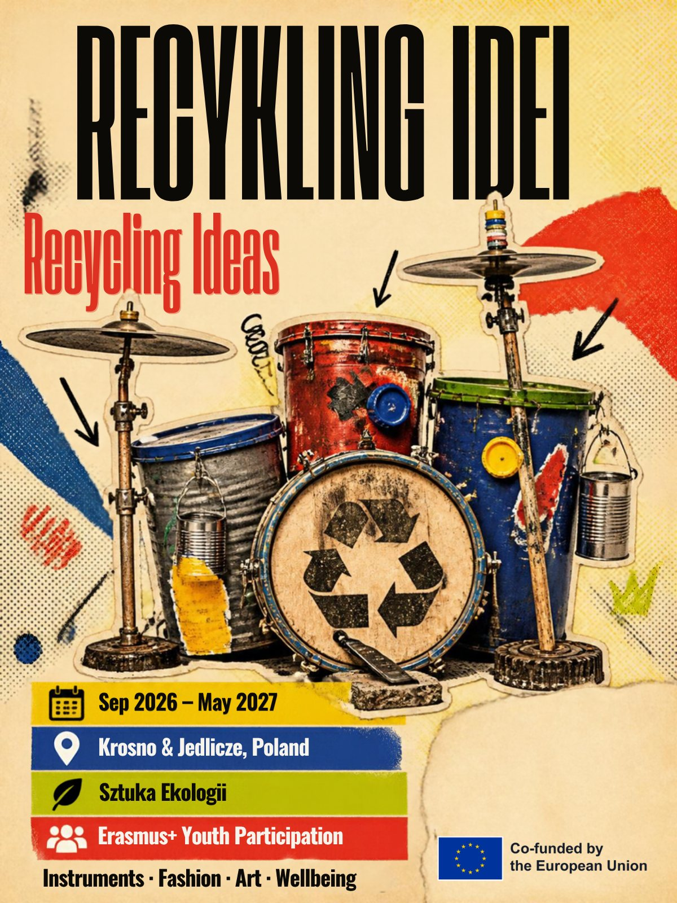
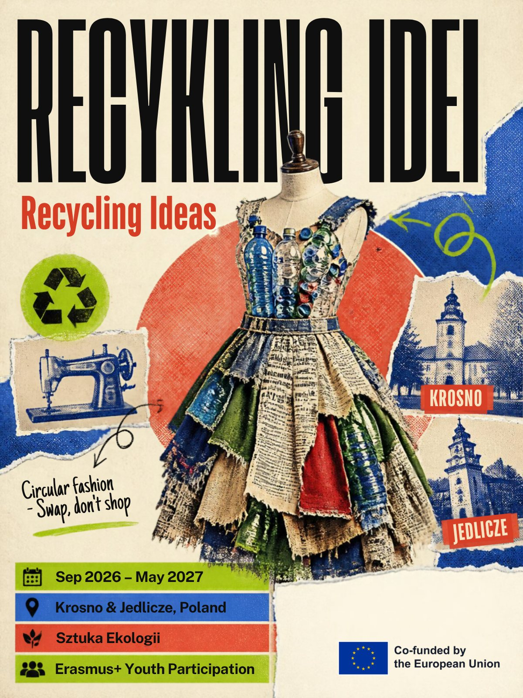
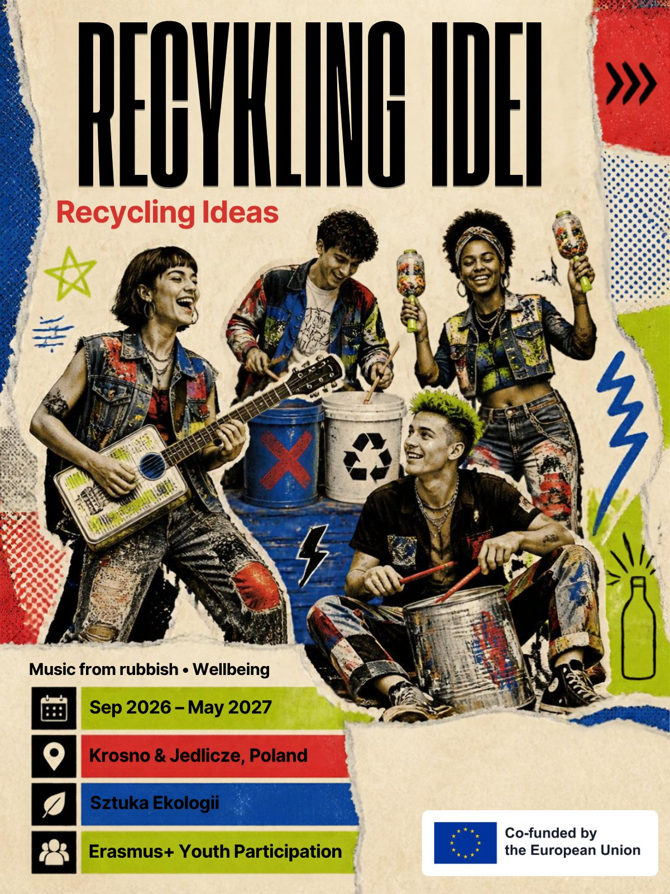

Europejskie Cele Młodzieżowe
Wspieranie zrównoważonej, zielonej Europy, społeczeństw otwartych na wszystkich oraz zdrowia psychicznego i dobrostanu.

A gdyby rzeczy, które wyrzucamy, mogły stać się instrumentami, ubraniami i sztuką — i pomóc młodym ludziom poczuć się spokojniej i pewniej?

Projekt Recykling Idei stworzyli młodzi ludzie w wieku 18–25 lat z Krosna i Jedlicza przy wsparciu Fundacji Sztuka Ekologii. Jest finansowany z programu Erasmus+ w ramach akcji „Uczestnictwo młodzieży” i trwa od września 2026 do maja 2027 roku.
Przez dziewięć miesięcy grupa poprowadzi warsztaty, wydarzenia lokalne i projekty twórcze, które wiążą ekologię z dobrostanem psychicznym. Dzięki połączeniu sztuki, ekologii i edukacji pozaformalnej młodzi ludzie mogą zamienić bezradność, lęk i poczucie winy w działanie, współpracę i prawdziwe poczucie sprawczości.
Pomysł wyrósł z doświadczeń samych młodych ludzi i z ankiety, którą przeprowadzili w Światowy Dzień Zrównoważonego Rozwoju w krośnieńskich szkołach średnich i w Gminnym Ośrodku Kultury w Jedliczu.
Instrumenty, moda, sztuka i dobrostan — wszystko z rzeczy, które ktoś wyrzucił. Udostępnij plakat znajomym, powieś go w szkole albo wrzuć na swoje story.

A gdyby rzeczy, które wyrzucamy, mogły stać się instrumentami, ubraniami i sztuką?

Na warsztatach upcyklingu prowadzonych przez artystę Piotra Burgera uczniowie nauczą się projektować i budować użyteczne przedmioty z drewna, metalu, plastiku i tekstyliów. Młodzi liderzy projektu będą współprowadzić zajęcia jako edukatorzy rówieśniczy.
Wcześniej grupa sprawdzi, dokąd trafiają odpady: odwiedzi Regionalne Centrum Odzysku Odpadów w Krośnie i spotka się z Januszem Ficem, prezesem Krośnieńskiego Holdingu Komunalnego, a potem razem z uczniami krośnieńskich szkół średnich posprząta tereny zielone w Krośnie.

Uczestnicy poznają ekologiczne koszty szybkiej mody (fast fashion) i zaprojektują własną kolekcję ubrań wykonaną w całości z materiałów z odzysku.
Podczas otwartej wymiany ubrań mieszkańcy będą mogli oddać swoje rzeczy w nowe ręce. Na tej bazie grupa stworzy i przetestuje bezpłatną aplikację, dzięki której mieszkańcy Krosna i okolic wymienią się rzeczami, których już nie potrzebują.

Uczestnicy zbudują instrumenty z metalu, plastiku, drewna i tekstyliów, będą eksperymentować z dźwiękiem i napiszą własne piosenki o konsumpcji, dobrostanie i odpowiedzialności za planetę.
Równolegle odbędą się warsztaty o dobrostanie — o stresie, przeciążeniu cyfrowym i nawykach związanych z ekranami — a także zajęcia z rzeźby w papierze z Eweliną Jurasz, dyrektorką Biura Wystaw Artystycznych w Krośnie, na których papier z recyklingu stanie się sposobem wyrażania emocji.
Wyjazd integracyjny poświęcony zaufaniu, dobrostanowi i ekologii, a w jego ramach wizyta w Galerii Władysława Hasiora, którego sztuka pokazuje, że porzucone przedmioty mogą zyskać nowe znaczenie.
Wizyta w Regionalnym Centrum Odzysku Odpadów w Krośnie, spotkanie w Krośnieńskim Holdingu Komunalnym i sprzątanie terenów zielonych z lokalną młodzieżą.
Warsztaty upcyklingu z artystą Piotrem Burgerem, współprowadzone przez młodych liderów projektu w roli edukatorów rówieśniczych.
Kampania „Zmierz swój ślad węglowy” z warsztatami w szkołach prowadzonymi przez rówieśników, sadzenie drzew w Krośnie i debata młodzieżowa: Czy jedna osoba naprawdę może coś zmienić dla klimatu?
Poznawanie kosztów szybkiej mody i projektowanie kolekcji ubrań w całości z materiałów z odzysku.
Otwarta wymiana ubrań — i bezpłatna aplikacja do wymiany niepotrzebnych rzeczy w Krośnie i okolicy.
Warsztaty o stresie, przeciążeniu cyfrowym i nawykach ekranowych oraz zajęcia z rzeźby w papierze z recyklingu.
Budowanie instrumentów z odpadów i pisanie piosenek o konsumpcji, dobrostanie i planecie.
Konferencja otwarta dla całej społeczności: pokaz mody z upcyklingu, koncert na instrumentach z odpadów, prezentacja aplikacji do wymiany i panel z udziałem młodzieży, ekspertów i lokalnych decydentów.
Wspieranie zrównoważonej, zielonej Europy, społeczeństw otwartych na wszystkich oraz zdrowia psychicznego i dobrostanu.
W tym o osobach w trudnej sytuacji ekonomicznej, z problemami ze zdrowiem psychicznym, z doświadczeniem migracji lub wykluczenia społecznego.
Kontrakt grupowy, kręgi refleksji, strefa ciszy i dostęp do wsparcia psychologicznego.
Uczestnicy udokumentują zdobyte kompetencje w certyfikacie Youthpass.
Materiały z warsztatów, aplikacja do wymiany i drzewa posadzone w Krośnie mają służyć jeszcze długo po zakończeniu projektu.
Śledź projekt i zobacz, jak młodzi ludzie z Krosna i Jedlicza zamieniają odpady w nowe pomysły.
Sfinansowane ze środków UE. Wyrażone poglądy i opinie są jedynie opiniami autora lub autorów i niekoniecznie odzwierciedlają poglądy i opinie Unii Europejskiej lub Europejskiej Agencji Wykonawczej ds. Edukacji i Kultury (EACEA). Unia Europejska ani EACEA nie ponoszą za nie odpowiedzialności.